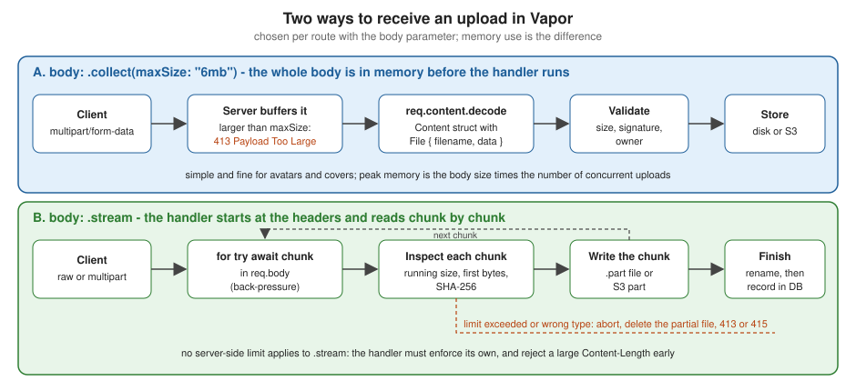

File Uploads and Streaming
|
This content was generated with the assistance of AI and should be verified against the official documentation before being relied on in production. |
This page is written against Vapor 4.122.2 (the latest 4.x release on 2026-10-17) on Swift 6.4 in the Swift 6 language mode
(swift-tools-version:6.3, the version of the current vapor/template), with multipart-kit 4.7.1 (the version Vapor 4.122.2
resolves), SwiftNIO 2.104.0 and, for object storage, Soto 7.17.0. Vapor 5 is at 5.0.0-beta.4 and is not generally available;
what changes for uploads is summarised in the version notes. Every example below was compiled in a scratch package with those
versions pinned, without warnings, and is covered by Swift Testing tests that use VaporTesting. The multipart and
streaming routes were also run against a live server with curl; the output shown is real, trimmed where noted. The Soto
code was compiled but not run against a live S3 endpoint.
Uploading a file looks like a single feature and is really four decisions: how the bytes arrive (a form in a browser, a raw body from a mobile client, a direct upload to object storage), whether they are held in memory or streamed, what the server checks before it trusts them, and where they end up. This page covers the Vapor side of each decision, using the Bookshelf running example (a book with a cover image):
-
The wire formats:
multipart/form-dataand raw bodies. -
Collected multipart uploads with a
Filein aContentstruct, for small files. -
Validating size, content type and file signature, and generating names.
-
Streaming a request body to disk, chunk by chunk, in constant memory, and streaming a multipart body.
-
Ownership checks, so that one reader cannot overwrite another reader’s cover (IDOR).
-
Streaming responses and downloads, including
Content-Disposition. -
Object storage with Soto (S3): proxying, presigned URLs and multi-instance deployments.
-
multipart-kit outside a request (tests, clients) and testing uploads.
Request bodies, the Request type and the body size limit are explained on
Requests and responses; decoding Content types is explained on
Content and Codable; Abort and error responses on
Error handling; middleware, including how to register it per route group, on
Middleware. The Swift features used here are in the Swift Reference:
Async/await and tasks and
Actors, isolation and Sendable. Serving static
assets from Public/ and the whole req.fileio API are covered on the Static Files and File I/O page, and
the server limits that sit in front of an upload (reverse proxy, compression) on the Server Configuration page.
How a file reaches the server
Two wire formats carry almost every upload.
multipart/form-data (RFC 7578) is what an HTML form with
enctype="multipart/form-data" and every curl -F produce. The body is a sequence of parts separated by a boundary string
that the client chooses and announces in the Content-Type header. Each part has its own headers and a body; a part that is a
file has a filename in its Content-Disposition header:
POST /books HTTP/1.1
Host: api.example.com
Content-Type: multipart/form-data; boundary=----bookshelf42
Authorization: Bearer <token>
------bookshelf42
Content-Disposition: form-data; name="title"
Dune
------bookshelf42
Content-Disposition: form-data; name="cover"; filename="dune.png"
Content-Type: image/png
<binary PNG bytes>
------bookshelf42--A raw body is simply the file as the request body, with the file’s media type as Content-Type and the metadata in the URL
or in headers: PUT /books/42/cover with Content-Type: image/png. It has no framing overhead, nothing to parse, and
streams naturally; it is the better choice for mobile apps and API clients. Browsers need multipart because a form can
carry several fields together with the file.
| Approach | Good for | Vapor tools |
|---|---|---|
Multipart form, collected in memory |
forms with a few fields and a small file (avatars, covers, attachments of a few MB) |
|
Raw body, streamed |
large files, mobile and API clients, constant memory |
|
Multipart, streamed |
a browser form with a large file |
|
Direct upload to object storage |
very large files, offloading bandwidth from the application |
a presigned |
The figure shows the two ways Vapor can receive a body and where the checks belong in each.

Where uploads sit in the request lifecycle
The server decodes the request head and runs the middleware chain, so authentication middleware has already run (and has
usually rejected anonymous clients) before a single byte of the body is read. The router then matches the route and applies
its body strategy, chosen with the body: parameter of the registration methods:
-
With
.collect(maxSize:)(the default strategy, with the limitapp.routes.defaultMaxBodySize, which is16kb), Vapor reads the whole body, answering413 Payload Too Largewhen it exceeds the limit, and only then calls the handler.req.content.decodeworks becausereq.body.datais set. -
With
.stream, the handler starts as soon as the headers are in,req.body.dataisnil, and the handler pulls the bytes itself. There is no server-side size limit: the handler must enforce its own.
The default limit surprises everyone once: a multipart request of 100 kB to a default route fails with 413 before the
handler runs, with a JSON body {"error":true,"reason":"Payload Too Large"}. Raise the limit on the one route that needs it,
not globally, because every collected body is held in memory per connection. Remember that the limit applies to the whole
body: the file plus the other fields, the boundaries and the part headers. A reverse proxy has its own limit that is checked
first: nginx rejects bodies over client_max_body_size (1 MB by default) with a 413 that Vapor never sees (see Deployment Targets for an nginx configuration).
Multipart uploads with File in a Content struct
Vapor’s File type is a Codable struct with two stored properties, filename (including the extension) and data (a
ByteBuffer), and two computed ones, extension and contentType (the media type guessed from the filename extension,
not the Content-Type of the part). Using it as the type of a property in a Content struct makes
req.content.decode read that part as a file. Text parts become String and number properties, repeated parts with names
ending in [] become arrays, and an optional property tolerates a missing part.
import Vapor
struct ProfileForm: Content {
var displayName: String
var avatar: File
var attachments: [File]?
}
func collectedUploadExample(_ routes: some RoutesBuilder, directory: String) {
// The whole multipart body (limit: 3 MB) is read into memory before the handler runs.
routes.on(.POST, "profile", body: .collect(maxSize: "3mb")) { req async throws -> String in
let form = try req.content.decode(ProfileForm.self)
guard form.avatar.data.readableBytes > 0 else {
throw Abort(.badRequest, reason: "Empty avatar")
}
// Never use form.avatar.filename in a path: it is chosen by the client.
let path = "\(directory)/avatar-\(UUID().uuidString.lowercased()).bin"
try await req.fileio.writeFile(form.avatar.data, at: path)
return "\(form.displayName): \(form.avatar.filename) (\(form.avatar.data.readableBytes) bytes), "
+ "\(form.attachments?.count ?? 0) attachments"
}
}A request that exercises it, with its real response (a PNG-like file of 108 bytes, two extra files sent as attachments[]):
$ curl -s -X POST localhost:8080/profile -F displayName=Ada -F avatar=@c.png \
-F 'attachments[]=@c.png' -F 'attachments[]=@big.bin'
Ada: c.png (108 bytes), 2 attachmentsWhat to know about this style:
-
The whole multipart body is in memory before the handler runs (here at most 3 MB), and decoding produces a separate
ByteBufferfor each part. Peak memory is roughly the body size times the number of concurrent uploads. That is fine for avatars and covers and a poor choice for videos. -
File.contentTypeis derived from the client-chosen filename, and theContent-Typeheader of the part is not exposed byFilein 4.122.2. Neither is evidence of what the bytes contain. Check the bytes (next section). -
File.filenameis chosen by the client and may contain../, a drive letter, a NUL byte or markup. Use it for display and never to build a path (the example above uses a generated name). -
When the body is JSON instead of multipart,
Filedecodes from an object with a base64datastring and afilename, so oneContenttype can serve both clients. -
Decoding errors become
400 Bad Requestresponses with the decoder’s message: a missingdisplayNamereturns{"reason":"No such key 'displayName' at path ''...","error":true}, a missing file part reports the missing keyavatar, and a request whoseContent-Typeismultipart/form-datawithout aboundaryparameter returns415 Unsupported Media Type. -
The text fields of the form can be validated with
Validatableas usual; there is no built-in validator forFile, so the size and type checks are plain Swift, shown next.validate(content:)reads the fields from the multipart body.
The Validatable extension of the form used for the Bookshelf (title and author are validated, the optional cover is
checked by the code below):
import Vapor
struct NewBookForm: Content {
var title: String
var author: String
var cover: File?
}
extension NewBookForm: Validatable {
static func validations(_ validations: inout Validations) {
validations.add("title", as: String.self, is: !.empty && .count(...200))
validations.add("author", as: String.self, is: !.empty && .count(...100))
}
}Source: Vapor docs: Validation
multipart-kit also limits how deeply a form can nest (name[a][b]): FormDataDecoder has a nestingDepth of 8 by
default, and a deeper structure is rejected. The configuration shown in the multipart-kit section lowers it for the whole
application.
Validating what arrives
Everything in an upload is attacker-controlled: the bytes, the filename, the Content-Type of the part and the
Content-Length. The OWASP File Upload Cheat
Sheet is the checklist; the table maps it onto Vapor.
| Check | How | Where in Vapor |
|---|---|---|
Maximum size |
reject early on |
|
Allowed types |
an allowlist of kinds, decided by the file signature (the first bytes), not by the filename or the |
a |
Declared type agrees |
the |
compare in the handler, answer |
Filename |
generate the stored name (UUID plus an extension chosen by the server); keep the original only as metadata and sanitise it when you send it back |
|
Location |
store outside |
a directory such as |
Count |
limit the number of files per request and per user |
decode into a fixed set of properties; cap arrays |
Content |
for images, decode and re-encode (this removes polyglot payloads and metadata); scan documents with an antivirus service |
outside Vapor (an image library or a scanning service) |
Serving |
|
response headers (see downloads) |
The support types of the Bookshelf example implement the first rows. FileKind recognises PNG, JPEG and PDF by their
signature; UploadPolicy is the allowlist and the limit; UploadInspector applies the policy to a stream of chunks (the
signature can be split across the first chunks, so it keeps the first bytes until it has enough); UploadSink writes the
chunks to a temporary .part file while hashing them and renames the file to its final server-chosen name only when
everything passed; InspectedChunks wraps any body in the same checks, which is how the S3 route reuses them.
import Vapor
import _NIOFileSystem
/// The file types the Bookshelf accepts as book covers, identified by their first bytes.
enum FileKind: String, Sendable, CaseIterable {
case png, jpeg, pdf
var mediaType: HTTPMediaType {
switch self {
case .png: .png
case .jpeg: .jpeg
case .pdf: .pdf
}
}
/// The extension the server picks. The client-supplied one is never used.
var fileExtension: String { self == .jpeg ? "jpg" : rawValue }
/// Identifies a file by its signature ("magic bytes"), not by its name or Content-Type header.
static func sniff(_ prefix: ByteBuffer) -> FileKind? {
let bytes = Array(prefix.readableBytesView.prefix(8))
if bytes.starts(with: [0x89, 0x50, 0x4E, 0x47, 0x0D, 0x0A, 0x1A, 0x0A]) { return .png }
if bytes.starts(with: [0xFF, 0xD8, 0xFF]) { return .jpeg }
if bytes.starts(with: Array("%PDF-".utf8)) { return .pdf }
return nil
}
}
struct UploadPolicy: Sendable {
var maxBytes: Int
var allowed: Set<FileKind>
static let cover = UploadPolicy(maxBytes: 5 * 1024 * 1024, allowed: [.png, .jpeg])
}
/// Applies the policy to a stream of chunks: size limit first, then the file signature.
struct UploadInspector {
let policy: UploadPolicy
private(set) var seen = 0
private var prefix = ByteBuffer()
private var kind: FileKind?
init(policy: UploadPolicy) { self.policy = policy }
mutating func accept(_ chunk: ByteBuffer) throws {
seen += chunk.readableBytes
guard seen <= policy.maxBytes else {
throw Abort(.payloadTooLarge, reason: "Files are limited to \(policy.maxBytes) bytes")
}
if kind == nil, prefix.readableBytes < 8 {
prefix.writeImmutableBuffer(chunk)
if prefix.readableBytes >= 8 { kind = try identify() }
}
}
/// Call when the stream has ended. Very short files are identified here.
mutating func complete() throws -> FileKind {
if let kind { return kind }
let found = try identify()
kind = found
return found
}
private func identify() throws -> FileKind {
guard let found = FileKind.sniff(prefix), policy.allowed.contains(found) else {
throw Abort(.unsupportedMediaType, reason: "Only PNG and JPEG covers are accepted")
}
return found
}
}
/// Wraps a body so that the policy is enforced before the bytes reach their destination (for example S3).
struct InspectedChunks<Base: AsyncSequence>: AsyncSequence where Base.Element == ByteBuffer {
typealias Element = ByteBuffer
var base: Base
var policy: UploadPolicy
struct AsyncIterator: AsyncIteratorProtocol {
var base: Base.AsyncIterator
var inspector: UploadInspector
mutating func next() async throws -> ByteBuffer? {
guard let chunk = try await base.next() else {
_ = try inspector.complete()
return nil
}
try inspector.accept(chunk)
return chunk
}
}
func makeAsyncIterator() -> AsyncIterator {
AsyncIterator(base: base.makeAsyncIterator(), inspector: UploadInspector(policy: policy))
}
}
struct StoredUpload: Content {
var key: String
var bytes: Int
var sha256: String
var contentType: String
}
/// Writes an upload to disk chunk by chunk while enforcing the policy.
/// Memory use is one chunk, whatever the size of the file.
struct UploadSink {
private let directory: String
private let key: String
private let handle: WriteFileHandle
private var offset: Int64 = 0
private var hasher = SHA256()
private var inspector: UploadInspector
private var partialPath: String { "\(directory)/\(key).part" }
static func open(in directory: String, policy: UploadPolicy) async throws -> UploadSink {
let key = UUID().uuidString.lowercased()
try await FileSystem.shared.createDirectory(at: FilePath(directory), withIntermediateDirectories: true)
let handle = try await FileSystem.shared.openFile(
forWritingAt: FilePath("\(directory)/\(key).part"),
options: .newFile(replaceExisting: false)
)
return UploadSink(policy: policy, directory: directory, key: key, handle: handle)
}
private init(policy: UploadPolicy, directory: String, key: String, handle: WriteFileHandle) {
self.inspector = UploadInspector(policy: policy)
self.directory = directory
self.key = key
self.handle = handle
}
mutating func append(_ chunk: ByteBuffer) async throws {
try inspector.accept(chunk)
hasher.update(data: chunk.readableBytesView)
offset += try await handle.write(contentsOf: chunk, toAbsoluteOffset: offset)
}
/// Checks the file signature, closes the file and moves it to its final name.
mutating func finish(declaredType: HTTPMediaType? = nil) async throws -> StoredUpload {
let kind = try inspector.complete()
if let declaredType, declaredType.serialize() != kind.mediaType.serialize() {
throw Abort(.unsupportedMediaType, reason: "Content-Type does not match the file")
}
try await handle.close()
let storedKey = "\(key).\(kind.fileExtension)"
try await FileSystem.shared.moveItem(at: FilePath(partialPath), to: FilePath("\(directory)/\(storedKey)"))
return StoredUpload(
key: storedKey,
bytes: Int(offset),
sha256: hasher.finalize().map { String(format: "%02x", $0) }.joined(),
contentType: kind.mediaType.serialize()
)
}
/// Discards a partial upload. Call it from every error path.
func abort() async {
try? await handle.close(makeChangesVisible: false)
_ = try? await FileSystem.shared.removeItem(at: FilePath(partialPath))
}
}Source: Vapor docs: Files, vapor/vapor 4.122.2: FileIO.swift and the swift-nio 2.104.0: NIOFS (the file system API)
Notes on this code:
-
The file API used for writing is SwiftNIO’s
_NIOFileSystemmodule (the product is spelled with an underscore because SwiftNIO has not declared the API source-stable; Vapor 4.122.2 itself imports it forreq.fileio). It needs the dependency shown in the Package.swift below.req.fileio.writeFileis not enough here: it writes oneByteBufferat offset 0 and truncates an existing file, so it cannot append chunks. -
abort()closes the handle without making changes visible and deletes the unfinished.partfile. The final name only exists afterfinish()has moved the file, so a reader of the directory never sees a half-written upload. -
The
UploadInspectorthrowsAborterrors (413over the limit,415for an unknown signature), whichErrorMiddlewareturns into JSON responses. -
Writing happens with
awaiton the NIO file system, never with blocking Foundation calls on the event loop threads. Some Foundation calls (FileManager,Data(contentsOf:)) block the thread they run on; see the concurrency notes. -
A signature check is necessary and not sufficient. A file that starts with the PNG signature may still be a polyglot (a valid PNG followed by script) or a decompression bomb. Re-encode images and serve with
nosniff.
Streaming a request body to disk
A route registered with body: .stream receives the body as an AsyncSequence of ByteBuffer. The sequence applies
back-pressure with a watermark of 20 and 5 chunks: when the handler is slow to consume (a slow disk or S3), Vapor stops
reading from the socket and the client’s TCP window closes, so memory use stays at a few chunks whatever the file size.
Memory does not grow with the size of the file, which is the whole point.
import Vapor
func streamedUploadRoutes(_ routes: some RoutesBuilder, directory: String) {
routes.on(.PUT, "covers", body: .stream) { req async throws -> StoredUpload in
// Reject early when the client announces a body that is too large.
if let length = req.headers.first(name: .contentLength).flatMap(Int.init),
length > UploadPolicy.cover.maxBytes {
throw Abort(.payloadTooLarge)
}
var sink = try await UploadSink.open(in: directory, policy: .cover)
do {
for try await chunk in req.body {
try await sink.append(chunk)
}
return try await sink.finish(declaredType: req.headers.contentType)
} catch {
await sink.abort()
throw error
}
}
}The handler follows a fixed shape: reject an announced oversize body early, open the sink, loop over the chunks, finish, and
abort the sink on any error so that no partial file stays behind. A client that disconnects makes the loop throw, and the
same catch cleans up. Live results against the running application (sizes and the hash are those of a 108-byte test file;
the JSON key order varies, because the encoder does not sort keys):
$ curl -s -X PUT localhost:8080/covers -H 'Content-Type: image/png' --data-binary @c.png
{"sha256":"2494700b1529f6b7e10b40c25674b2b10fe47a4fe154b28b37f90ad8dfdde022","contentType":"image\/png","key":"09eb6121-b0b3-43ae-b30e-67b509c32aba.png","bytes":108}
$ curl -si -X PUT localhost:8080/covers -H 'Content-Type: image/png' --data-binary 'hello world, not an image'
HTTP/1.1 415 Unsupported Media Type
{"error":true,"reason":"Only PNG and JPEG covers are accepted"}Points that matter in a streaming handler:
-
Content-Lengthis a claim. The early check saves work for honest clients; the running counter in the inspector is what actually protects the server, and it also covers chunked uploads that have noContent-Length. -
The legacy
req.body.drain { ... }callback API still exists (it returnsEventLoopFuture) andreq.body.collect(max:)collects a streamed body on demand with its own limit (16 KiB by default,nilmeans unlimited and is dangerous). Preferfor try await chunk in req.bodyin new code. -
A streamed route cannot use
req.content.decode: the body has not been collected. Put the metadata in the URL, in headers or in a separate request, or use the streamed multipart reader below. -
The body is a stream: consume it once, inside the handler. Do not keep a reference to it after the handler has returned.
Streaming a multipart body
A browser form posts multipart, and .collect would hold a large file in memory. In 4.x the way to stream it is the
low-level MultipartParser of multipart-kit: you create it with the boundary, set three callbacks (onHeader, onBody,
onPartComplete) and feed it each chunk with execute(_:). The callbacks are synchronous and cannot await, so the example
below only records what the parser saw and replays it from the async loop, where the file writes happen. Text fields are
kept in memory under a small cap; the first file part goes to an UploadSink.
import Vapor
/// What the multipart parser saw, recorded by its synchronous callbacks and replayed by the async loop.
private final class PartEvents {
enum Event {
case header(name: String, value: String)
case body(ByteBuffer)
case partComplete
}
var pending: [Event] = []
}
struct MultipartUpload {
var fields: [String: String]
var file: StoredUpload?
}
/// Streams a `multipart/form-data` request body: text fields are kept in memory (and capped),
/// the first file part is written to disk as it arrives.
func receiveMultipart(_ req: Request, directory: String, policy: UploadPolicy) async throws -> MultipartUpload {
guard let boundary = req.headers.contentType?.parameters["boundary"], !boundary.isEmpty else {
throw Abort(.unsupportedMediaType, reason: "Expected multipart/form-data with a boundary")
}
let events = PartEvents()
let parser = MultipartParser(boundary: boundary)
parser.onHeader = { name, value in events.pending.append(.header(name: name, value: value)) }
parser.onBody = { buffer in events.pending.append(.body(buffer)) }
parser.onPartComplete = { events.pending.append(.partComplete) }
var fields: [String: String] = [:]
var fieldBytes = 0
var headers = HTTPHeaders()
var fieldValue = ByteBuffer()
var sink: UploadSink?
var stored: StoredUpload?
do {
for try await chunk in req.body {
try parser.execute(chunk)
let batch = events.pending
events.pending.removeAll(keepingCapacity: true)
for event in batch {
switch event {
case .header(let name, let value):
headers.add(name: name, value: value)
case .body(var buffer):
if headers.contentDisposition?.filename != nil {
if sink == nil {
guard stored == nil else { throw Abort(.badRequest, reason: "Only one file per request") }
sink = try await UploadSink.open(in: directory, policy: policy)
}
try await sink?.append(buffer)
} else {
fieldBytes += buffer.readableBytes
guard fieldBytes <= 64 * 1024 else { throw Abort(.payloadTooLarge, reason: "Form fields too large") }
fieldValue.writeBuffer(&buffer)
}
case .partComplete:
if var finished = sink {
stored = try await finished.finish()
sink = nil
} else if let name = headers.contentDisposition?.name {
fields[name] = String(buffer: fieldValue)
}
headers = HTTPHeaders()
fieldValue.clear()
}
}
}
} catch {
await sink?.abort()
throw error
}
return MultipartUpload(fields: fields, file: stored)
}
func streamedMultipartRoutes(_ routes: some RoutesBuilder, directory: String) {
routes.on(.POST, "imports", body: .stream) { req async throws -> StoredUpload in
let upload = try await receiveMultipart(req, directory: directory, policy: .cover)
guard let file = upload.file else { throw Abort(.badRequest, reason: "Missing file part") }
return file
}
}The parser handles boundaries and headers that are split across chunks, and ignores any epilogue after the closing
boundary. Its limitations are the ones of the example: it does not limit the size of header lines or the number of parts
(add counters in the replay loop), and onBody hands you the body bytes of a part in several buffers, so a text field must
be reassembled, as fieldValue does. A request whose Content-Type has no boundary gets 415; a body that is not
well-formed multipart makes execute throw, which becomes a 500 unless you map it to 400. Run against the live server:
$ curl -s -X POST localhost:8080/imports -F title=Dune -F cover=@c.png
{"sha256":"2494700b...","contentType":"image\/png","key":"f5c2faca-af27-4fd4-bfd1-abaa80ebc2e5.png","bytes":108}Ownership: who may change which file
Validating the bytes does not decide whose file it is. The classic bug is an upload endpoint that takes the target from the
URL and trusts it: PUT /users/7/avatar lets user 8 overwrite user 7’s picture by changing a number. This is an insecure
direct object reference (IDOR, the cause of most "broken object level authorization" findings in the
OWASP API Security Top 10). Two rules remove it: the owner is the authenticated user,
read from the session or token, and the object is looked up in the database and compared with that user before any byte is
written. The Bookshelf routes below apply both, create a book and its cover in one multipart request, replace the cover by
a streamed PUT, and serve the cover back.
import Vapor
import _NIOFileSystem
/// Authenticated user. Real applications use JWTs or sessions (see the security pages); this stand-in
/// maps two placeholder tokens to users so that the ownership checks below can be demonstrated and tested.
struct Reader: Authenticatable, Sendable {
let id: Int
}
struct DemoTokenAuthenticator: AsyncBearerAuthenticator {
func authenticate(bearer: BearerAuthorization, for request: Request) async throws {
switch bearer.token {
case "placeholder-token-1": request.auth.login(Reader(id: 1))
case "placeholder-token-2": request.auth.login(Reader(id: 2))
default: break
}
}
}
struct BookEntry: Sendable {
var id: UUID
var ownerID: Int
var title: String
var coverKey: String?
var coverFilename: String?
}
/// In-memory stand-in for the Fluent model of the Bookshelf.
actor BookCatalog {
private var books: [UUID: BookEntry] = [:]
func add(_ entry: BookEntry) { books[entry.id] = entry }
func book(_ id: UUID) -> BookEntry? { books[id] }
/// Replaces the cover and returns the key of the previous one, which the caller deletes.
func setCover(_ id: UUID, key: String, filename: String?) -> String? {
let old = books[id]?.coverKey
books[id]?.coverKey = key
books[id]?.coverFilename = filename
return old
}
}
/// Keeps only characters that are safe in a `Content-Disposition` filename: never trust the name sent by a client.
func safeDownloadName(_ name: String, fallback: String) -> String {
let base = name.split(whereSeparator: { $0 == "/" || $0 == "\\" }).last.map(String.init) ?? ""
let cleaned = String(base.unicodeScalars.filter {
$0.isASCII && ($0.properties.isAlphabetic || ("0"..."9").contains($0) || $0 == "." || $0 == "-" || $0 == "_")
}.map(Character.init))
let trimmed = cleaned.trimmingCharacters(in: CharacterSet(charactersIn: "."))
return trimmed.isEmpty ? fallback : String(trimmed.prefix(100))
}
func bookCoverRoutes(_ routes: some RoutesBuilder, catalog: BookCatalog, directory: String) {
let protected = routes.grouped(DemoTokenAuthenticator(), Reader.guardMiddleware())
// Create a book and its cover in one multipart request (collected body).
protected.on(.POST, "books", body: .collect(maxSize: "6mb")) { req async throws -> Response in
let reader = try req.auth.require(Reader.self)
try NewBookForm.validate(content: req)
let form = try req.content.decode(NewBookForm.self)
var entry = BookEntry(id: UUID(), ownerID: reader.id, title: form.title)
if let cover = form.cover, cover.data.readableBytes > 0 {
var sink = try await UploadSink.open(in: directory, policy: .cover)
do {
try await sink.append(cover.data)
entry.coverKey = try await sink.finish().key
entry.coverFilename = cover.filename
} catch {
await sink.abort()
throw error
}
}
await catalog.add(entry)
let response = Response(status: .created)
response.headers.replaceOrAdd(name: .location, value: "/books/\(entry.id)")
try response.content.encode(CreatedBook(id: entry.id, title: entry.title, hasCover: entry.coverKey != nil))
return response
}
// Replace the cover of an existing book (streamed body).
protected.on(.PUT, "books", ":bookID", "cover", body: .stream) { req async throws -> StoredUpload in
let reader = try req.auth.require(Reader.self)
guard let id = req.parameters.get("bookID", as: UUID.self) else { throw Abort(.badRequest) }
// The book comes from the database and the owner from the session, never from the URL or the body.
guard let book = await catalog.book(id), book.ownerID == reader.id else {
throw Abort(.notFound) // 404 rather than 403: do not reveal that the book exists
}
var sink = try await UploadSink.open(in: directory, policy: .cover)
let stored: StoredUpload
do {
for try await chunk in req.body { try await sink.append(chunk) }
stored = try await sink.finish(declaredType: req.headers.contentType)
} catch {
await sink.abort()
throw error
}
if let old = await catalog.setCover(id, key: stored.key, filename: nil) {
_ = try? await FileSystem.shared.removeItem(at: FilePath("\(directory)/\(old)"))
}
return stored
}
// Download the cover as an attachment.
routes.get("books", ":bookID", "cover") { req async throws -> Response in
guard let id = req.parameters.get("bookID", as: UUID.self),
let book = await catalog.book(id), let key = book.coverKey else { throw Abort(.notFound) }
let response = try await req.fileio.asyncStreamFile(at: "\(directory)/\(key)")
response.headers.replaceOrAdd(name: "X-Content-Type-Options", value: "nosniff")
let name = safeDownloadName(book.coverFilename ?? "", fallback: "cover-\(id.uuidString.lowercased()).\(key.split(separator: ".").last ?? "bin")")
response.headers.contentDisposition = .init(.attachment, filename: name)
return response
}
}
struct CreatedBook: Content {
var id: UUID
var title: String
var hasCover: Bool
}Source: Vapor docs: Authentication, Routing and FileIO.swift
Notes:
-
DemoTokenAuthenticatoris a stand-in with two placeholder tokens so that the example is self-contained. A real application verifies a JWT or a session (see Authentication, JSON Web Tokens (JWT) and Session Authentication and Web Login);Reader.guardMiddleware()answers401when no authenticator logged a user in. -
A reader who is not the owner gets
404, not403: a403confirms that the book exists. Use403when the resource’s existence is public and only the action is forbidden. -
The key under which the file is stored comes from the server (a UUID plus an extension chosen from the detected kind); the URL contains the book id, and the key is read from the database. There is no path built from client input, so path traversal (
../../etc/passwd) has no purchase.req.fileio.asyncStreamFile(at:)receives only server-made paths. -
The old cover is deleted after the new one is recorded, so a failed upload keeps the previous cover.
-
Do not put uploaded files under
Public/:FileMiddlewarewould serve them by path, with no ownership check, and an HTML or SVG upload would run in your origin (stored XSS; see Security Hardening). -
Add rate limits, quotas per user and cleanup of orphaned files (a
.partfile left by a crash, a book that was deleted) as a periodic job (see Scheduled Jobs and Queues & Background Jobs); the file system cannot make "write the file and update the database" one transaction.
The tests below run the whole scenario in-process (the helper withApp creates a testing application and registers the
routes; png is a small file that starts with the PNG signature). The ownership test checks that the owner can replace the
cover, that another reader gets 404, that an anonymous caller gets 401, and that the download is an attachment with a
sanitised name.
import VaporTesting
import Testing
import Foundation
@testable import App
private let png = Data([0x89, 0x50, 0x4E, 0x47, 0x0D, 0x0A, 0x1A, 0x0A] + Array(repeating: 0, count: 64))
private func withApp(_ body: (Application) async throws -> Void) async throws {
let app = try await Application.make(.testing)
do {
try routes(app)
try await body(app)
} catch { try await app.asyncShutdown(); throw error }
try await app.asyncShutdown()
}
@Suite struct UploadTests {
@Test func streamedRawUploadAndSignatureCheck() async throws {
try await withApp { app in
let tester = try app.testing()
try await tester.test(.PUT, "covers", headers: ["Content-Type": "image/png"], body: ByteBuffer(bytes: png)) { res async in
#expect(res.status == .ok)
#expect(res.body.string.contains("\"bytes\":72"))
}
try await tester.test(.PUT, "covers", headers: ["Content-Type": "image/png"], body: ByteBuffer(string: "<html>not an image</html>")) { res async in
#expect(res.status == .unsupportedMediaType)
}
try await tester.test(.PUT, "covers", headers: ["Content-Type": "image/jpeg"], body: ByteBuffer(bytes: png)) { res async in
#expect(res.status == .unsupportedMediaType)
}
let big = ByteBuffer(bytes: png + Data(count: 6 * 1024 * 1024))
try await tester.test(.PUT, "covers", headers: ["Content-Type": "image/png"], body: big) { res async in
#expect(res.status == .payloadTooLarge)
}
}
}
@Test func ownership() async throws {
try await withApp { app in
let tester = try app.testing()
var bookID = ""
let form = NewBookForm(title: "Dune", author: "Frank Herbert", cover: File(data: ByteBuffer(bytes: png), filename: "../../etc/Dune cover.png"))
try await tester.test(.POST, "books", headers: ["Authorization": "Bearer placeholder-token-1"], beforeRequest: { req in
try req.content.encode(form, as: .formData)
}) { res async throws in
#expect(res.status == .created)
bookID = try res.content.decode(CreatedBook.self).id.uuidString
}
// The owner can replace the cover; another user gets 404; no token gets 401.
try await tester.test(.PUT, "books/\(bookID)/cover", headers: ["Authorization": "Bearer placeholder-token-1", "Content-Type": "image/png"], body: ByteBuffer(bytes: png)) { res async in
#expect(res.status == .ok)
}
try await tester.test(.PUT, "books/\(bookID)/cover", headers: ["Authorization": "Bearer placeholder-token-2", "Content-Type": "image/png"], body: ByteBuffer(bytes: png)) { res async in
#expect(res.status == .notFound)
}
try await tester.test(.PUT, "books/\(bookID)/cover", headers: ["Content-Type": "image/png"], body: ByteBuffer(bytes: png)) { res async in
#expect(res.status == .unauthorized)
}
try await tester.test(.GET, "books/\(bookID)/cover") { res async in
#expect(res.status == .ok)
#expect(res.headers.first(name: .contentDisposition)?.hasSuffix(".png\"") == true)
#expect(res.headers.contentType == .png)
}
}
}
}Source: Vapor docs: Testing
Streaming responses and downloads
The response side mirrors the request side. A Response.Body can be a buffer or string (in memory), or a stream that Vapor
pulls from a closure. The details of the three stream initialisers (stream: with the legacy BodyStreamWriter and
futures, asyncStream: and managedAsyncStream:) and their count: parameter are on
Requests and responses; here the rules that matter for files:
-
Use
managedAsyncStream: Vapor ends the response when the closure returns and reports a thrown error to the client. With plainasyncStreamyou must callwrite(.end)orwrite(.error(_))yourself. -
Without
count:the response is chunked (Transfer-Encoding: chunked); withcount:Vapor sendsContent-Lengthand you must write exactly that many bytes. -
The closure is
@Sendable: capture onlySendablevalues (the example captures theLogger, not theRequest). -
The writer suspends when the client reads slowly, so a slow download does not make the process buffer the file.
Files on disk are sent with req.fileio.asyncStreamFile(at:). It reads in chunks, sets Content-Type from the file
extension (or from mediaType:), computes an ETag (the modification time plus the size by default, a SHA-256 of the
content with advancedETagComparison: true), answers 304 Not Modified to a matching If-None-Match and supports a single
byte Range, which is what makes video seeking and resumable downloads work. The cover route above uses it. The older
req.fileio.streamFile(at:) is the same operation returning an EventLoopFuture<Response>. The rest of the req.fileio API and FileMiddleware are on Static Files and File I/O.
Downloads are controlled by headers:
-
Content-Disposition: attachment; filename="books.csv"makes the browser save the file;inlinedisplays it. In Vapor,response.headers.contentDisposition = .init(.attachment, filename: "books.csv"). The property also parsesfilenameandfilename*from incoming headers, but only writesfilename: a non-ASCII name needs an ASCII fallback of your own, or an RFC 8187filename*=UTF-8''...parameter written by hand (see RFC 6266). -
The filename in the header is attacker-influenced whenever it comes from an upload. The
safeDownloadNamefunction in the Bookshelf code keeps only the base name and a conservative character set and falls back to a generated name. -
X-Content-Type-Options: nosniffstops browsers from guessing a more dangerous type, andCache-Control: privatekeeps proxies from caching a user’s files.
A generated export needs no file at all. The next route streams a CSV of the library as it is produced, as an attachment,
and neutralises spreadsheet formulas in the data (a title that starts with = would otherwise run as a formula in Excel;
this is CSV injection):
import Vapor
struct BookRow: Sendable {
var id: Int
var title: String
var author: String
}
/// Quotes a CSV field and neutralises spreadsheet formulas (CSV injection).
func csvField(_ value: String) -> String {
var text = value
if let first = text.first, "=+-@\t\r".contains(first) { text = "'" + text }
return "\"" + text.replacingOccurrences(of: "\"", with: "\"\"") + "\""
}
func exportRoutes(_ routes: some RoutesBuilder, rows: @escaping @Sendable () async throws -> [BookRow]) {
// A generated download: no file on disk, chunked transfer, saved by the browser as books.csv.
routes.get("exports", "books.csv") { req async throws -> Response in
let response = Response(status: .ok)
response.headers.contentType = HTTPMediaType(type: "text", subType: "csv", parameters: ["charset": "utf-8"])
response.headers.contentDisposition = .init(.attachment, filename: "books.csv")
response.headers.cacheControl = .init(isPrivate: true)
let logger = req.logger
response.body = .init(managedAsyncStream: { writer in
try await writer.writeBuffer(ByteBuffer(string: "id,title,author\r\n"))
for row in try await rows() {
try Task.checkCancellation()
let line = "\(row.id),\(csvField(row.title)),\(csvField(row.author))\r\n"
try await writer.writeBuffer(ByteBuffer(string: line))
}
logger.debug("CSV export finished")
})
return response
}
}Source: Vapor docs: Async, Response+Body.swift and RFC 4180: CSV
The output for a row whose title is =cmd|x and whose author contains quotes (from the test of this route):
id,title,author
1,"'=cmd|x","A ""B"""If the stream throws after the headers have been sent, Vapor can no longer change the status: the connection is closed and
the client sees a truncated body, so write the length with count: when you know it, and have clients verify the size.
Object storage with Soto (S3)
Files on the local disk work for one instance. With two replicas, or in a container with an ephemeral file system (Kubernetes, Cloud Run, ECS), an upload that landed on instance A is invisible to instance B and lost when the container is replaced. The fix is object storage: Amazon S3 or an S3-compatible service (MinIO, Cloudflare R2, Backblaze B2, Ceph). The AWS SDK for Swift is not required; Soto is the community SDK used with Vapor and is built on SwiftNIO and AsyncHTTPClient. Add it next to Vapor:
// Package.swift (excerpt)
dependencies: [
.package(url: "https://github.com/vapor/vapor.git", from: "4.122.2"),
.package(url: "https://github.com/apple/swift-nio.git", from: "2.101.0"),
.package(url: "https://github.com/soto-project/soto.git", from: "7.17.0"),
],
targets: [
.executableTarget(name: "App", dependencies: [
.product(name: "Vapor", package: "vapor"),
.product(name: "_NIOFileSystem", package: "swift-nio"),
.product(name: "SotoS3", package: "soto"),
]),
]There are three ways to move a file between the browser and S3, with different trade-offs:
| Way | Advantages | Costs |
|---|---|---|
Proxy through Vapor (stream the request body to S3) |
the server validates every byte; no CORS or bucket configuration for the browser |
the upload and download bandwidth passes through the application |
Presigned |
the file never touches Vapor, which scales to huge files |
you can only validate after the fact (check the object, delete it if it fails the policy); the bucket needs CORS |
Presigned |
S3 serves the file, with ranges and caching |
links work until they expire, and are shareable while they do |
The code below does the first and the third, and the same signedURL function creates a presigned PUT URL with
method: .PUT. The upload route streams the request body into an S3 multipart upload through
InspectedChunks, so the size limit and the signature check are applied before the bytes are sent; S3 multipart uploads
require parts of at least 5 MiB (except the last), and Soto buffers the chunks into parts of that size, so memory use is
one part rather than the file. If the stream fails (the inspector throws, the client disconnects) Soto aborts the multipart
upload so that S3 does not keep and bill for the orphaned parts. A bucket lifecycle rule that aborts incomplete multipart
uploads after a day is a good safety net.
import Vapor
import SotoS3
/// Object storage for covers. The same shape works with any S3-compatible service.
struct S3CoverStore: Sendable {
let s3: S3
let bucket: String
/// Streams a validated body to S3 as a multipart upload (parts of 5 MiB or more are sent as they fill).
func upload(key: String, contentType: String, body: Request.Body, policy: UploadPolicy, logger: Logger) async throws {
let request = S3.CreateMultipartUploadRequest(bucket: bucket, contentType: contentType, key: key)
_ = try await s3.multipartUpload(
request,
bufferSequence: InspectedChunks(base: body, policy: policy),
logger: logger
)
}
/// Proxies an object through the application, chunk by chunk.
func download(key: String, logger: Logger) async throws -> Response {
let object = try await s3.getObject(S3.GetObjectRequest(bucket: bucket, key: key), logger: logger)
let response = Response(status: .ok)
if let type = object.contentType { response.headers.replaceOrAdd(name: .contentType, value: type) }
response.body = .init(managedAsyncStream: { writer in
for try await chunk in object.body {
try await writer.writeBuffer(chunk)
}
}, count: Int(object.contentLength ?? 0))
return response
}
/// A time-limited URL the browser can use directly against S3: GET to download, PUT to upload.
func signedURL(key: String, method: HTTPMethod, expires: TimeAmount = .minutes(5)) async throws -> URL {
let url = URL(string: "https://\(bucket).s3.\(s3.region.rawValue).amazonaws.com/\(key)")!
return try await s3.signURL(url: url, httpMethod: method, expires: expires)
}
}
struct AWSClientShutdown: LifecycleHandler {
let client: AWSClient
func shutdownAsync(_ application: Application) async {
try? await client.shutdown()
}
}
func makeCoverStore(_ app: Application) -> S3CoverStore {
// Credentials come from Soto's default provider chain: environment variables, then the instance or task role.
let client = AWSClient(httpClient: app.http.client.shared)
app.lifecycle.use(AWSClientShutdown(client: client))
// S3_ENDPOINT is only set for S3-compatible services such as MinIO.
let s3 = S3(client: client, region: .eucentral1, endpoint: Environment.get("S3_ENDPOINT"))
return S3CoverStore(s3: s3, bucket: Environment.get("S3_BUCKET") ?? "bookshelf-covers-dev")
}
func s3Routes(_ routes: some RoutesBuilder, store: S3CoverStore) {
routes.on(.PUT, "s3", "covers", body: .stream) { req async throws -> Response in
// The key is generated by the server, never taken from the client.
let key = UUID().uuidString.lowercased()
// The stored Content-Type is the client's claim: accept only types the policy allows.
guard let type = req.headers.contentType,
UploadPolicy.cover.allowed.contains(where: { $0.mediaType.serialize() == type.serialize() }) else {
throw Abort(.unsupportedMediaType)
}
try await store.upload(key: key, contentType: type.serialize(), body: req.body, policy: .cover, logger: req.logger)
let response = Response(status: .created)
try response.content.encode(["key": key])
return response
}
routes.get("s3", "covers", ":key", "link") { req async throws -> Response in
guard let key = req.parameters.get("key", as: UUID.self)?.uuidString.lowercased() else { throw Abort(.badRequest) }
// Send the browser straight to S3 with a link that expires in five minutes.
return req.redirect(to: try await store.signedURL(key: key, method: .GET).absoluteString, redirectType: .temporary)
}
routes.get("s3", "covers", ":key") { req async throws -> Response in
guard let key = req.parameters.get("key", as: UUID.self)?.uuidString.lowercased() else { throw Abort(.badRequest) }
return try await store.download(key: key, logger: req.logger)
}
}Notes on the S3 integration:
-
Credentials are never in the source. Soto’s default provider chain reads the standard environment variables (
AWS_ACCESS_KEY_ID,AWS_SECRET_ACCESS_KEY), the shared credentials file, or the role of the instance or task. For a local MinIO setS3_ENDPOINTand the same variables to the MinIO values. TheS3_BUCKETname above is a placeholder; both are read withEnvironment.get, as described on Configuration and Environment. -
The
AWSClientmust be shut down before it is deallocated; theAWSClientShutdownlifecycle handler does it when the application shuts down. Reusing Vapor’s shared HTTP client (see HTTP Client) avoids a second connection pool; Vapor owns that client, so Soto does not close it. A store created once at start-up can be kept on theApplicationthrough aStorageKey, as described on Services, Storage and Dependency Injection. -
S3 object keys are generated by the server (UUIDs), never taken from the client, which prevents overwriting other users' objects and
../games in key prefixes. Per-user prefixes (users/7/covers/...) make ownership policies easier. -
The
Content-Typestored with the object is the client’s claim here (limited to the allowed types). Serve downloads with your own headers andnosniff, or detect the type from the first bytes before the upload as the disk code does. -
A single
PutObjectis limited to 5 GB, a multipart upload to 5 TiB with at most 10,000 parts; with 5 MiB parts the first limit you hit is about 48 GiB, so raise the part size for very large files. -
A presigned URL grants whatever the signing identity may do until it expires. Keep the expiry short, scope the key to one object, and never log the URL.
multipart-kit outside a request
multipart-kit is the package behind Vapor’s multipart support and has no dependency on Vapor: it provides the Codable layer
(FormDataEncoder, FormDataDecoder), the low-level MultipartParser and MultipartSerializer, and the MultipartPart
type with its name, filename and contentType helpers. Vapor registers the encoder and decoder as the coders of
multipart/form-data in its ContentConfiguration, which is why req.content.decode and req.content.encode(_, as: .formData)
work. Outside a request they are useful in three places: building multipart request bodies in tests, building outgoing
requests for the HTTP client (to forward an upload to another service), and parsing multipart data that does not arrive as a
request body, for example a file read from a queue.
import Vapor
struct CoverUpload: Content {
var title: String
var cover: File
}
enum MultipartKitExamples {
/// Encode a Codable value as multipart/form-data, for example to build a request body in a test
/// or an outgoing request with the HTTP client.
static func encode() throws -> (body: String, boundary: String) {
let boundary = "example-boundary"
let form = CoverUpload(title: "Dune", cover: File(data: "not really a PNG", filename: "dune.png"))
let body = try FormDataEncoder().encode(form, boundary: boundary)
return (body, boundary)
}
/// Decode a multipart body outside a Request, with a stricter nesting limit than the default of 8.
static func decode(_ body: String, boundary: String) throws -> CoverUpload {
try FormDataDecoder(nestingDepth: 2).decode(CoverUpload.self, from: body, boundary: boundary)
}
/// The low-level API: parts with headers and bodies, no Codable involved.
static func parts(from body: String, boundary: String) throws -> [MultipartPart] {
var parts: [MultipartPart] = []
var headers = HTTPHeaders()
var current = ByteBuffer()
let parser = MultipartParser(boundary: boundary)
parser.onHeader = { name, value in headers.replaceOrAdd(name: name, value: value) }
parser.onBody = { chunk in current.writeBuffer(&chunk) }
parser.onPartComplete = {
parts.append(MultipartPart(headers: headers, body: current))
headers = HTTPHeaders()
current = ByteBuffer()
}
try parser.execute(body)
return parts
}
static func serialize(boundary: String) throws -> String {
var part = MultipartPart(headers: [:], body: "Dune")
part.name = "title"
return try MultipartSerializer().serialize(parts: [part], boundary: boundary)
}
}
func configureMultipartLimits() {
// Applies to every multipart/form-data request that is decoded with req.content.
ContentConfiguration.global.use(decoder: FormDataDecoder(nestingDepth: 3), for: .formData)
}What these functions produce (output of the test run; the encoder adds the content-type of the file from its extension, and
MultipartSerializer writes only the headers you put on the part):
--example-boundary
Content-Disposition: form-data; name="title"
Dune
--example-boundary
content-type: image/png
Content-Disposition: form-data; filename="dune.png"; name="cover"
not really a PNG
--example-boundary--Notes: FormDataEncoder().encode(_:boundary:) needs a boundary you choose (Vapor’s own ContentEncoder conformance, used by
req.content.encode, generates one and sets the Content-Type header). To use multipart-kit without Vapor, add
.package(url: "https://github.com/vapor/multipart-kit.git", from: "4.7.1") and the MultipartKit product. The coders
are Sendable structs, so creating them in a function or storing them in the configuration is safe.
Testing uploads
VaporTesting (see Testing) builds multipart bodies for you: pass beforeRequest and call
try req.content.encode(form, as: .formData); for raw bodies pass body: with a ByteBuffer. The tests shown earlier
cover the cases that matter for an upload endpoint: the happy path, a wrong signature (415), a declared type that does not
match the bytes (415), a body over the limit (413), the ownership matrix (200, 404, 401) and the generated
download headers. Add a test for the partial file cleanup when you write your own sink: make the request fail midway and
assert that the directory contains no .part files.
Swift 6 and concurrency notes
-
Requestis aSendableclass in 4.122, but a stream closure can outlive the handler: capturingreqkeeps the whole request alive for as long as the client downloads. Capture only the values you need (req.logger, an id, a path) before the closure, as the CSV export does with the logger. -
UploadSinkandUploadInspectorare structs withmutatingmethods used from one task. If you share an upload state between tasks (for example to report progress), put it in anactor. -
The multipart parser callbacks are not
@Sendable, so a local class (PartEvents) can collect events without an@unchecked Sendableescape hatch; the parser itself is a class that must stay in one task. -
Blocking calls (
FileManager.default.copyItem,Data(contentsOf:), a synchronous image decode) occupy a thread of the cooperative pool or an event loop. Use the NIO file system API, or move CPU-heavy work (resizing, virus scanning) to a background job. Swift 6.4 in language mode 6 reports data races at compile time; the sample compiles without warnings. -
Request.Bodyis anAsyncSequenceofByteBufferandByteBufferisSendable, so a streamed body can be passed to another async function, as the S3 upload does withInspectedChunks. -
The
ExistentialAnyandMemberImportVisibilityupcoming features used by the Vapor template are enabled in the sample package: for exampleany Erroris spelled explicitly and extension members need a directimport.
Common errors and pitfalls
| Symptom | Cause | Fix |
|---|---|---|
|
the default |
|
|
multipart request without a |
let the client library set the header; with |
|
the form field name does not match the property name, or an optional is not optional |
match the names exactly; arrays use |
|
the route is |
collect first with |
The server runs out of memory under many uploads |
large |
stream large files; keep collect limits small |
A client gets a truncated download with status 200 |
the stream closure threw after the headers were sent |
validate before streaming; set |
|
an error path did not call |
abort in |
Filename shows |
the client’s filename was used |
generate names, sanitise for display and for |
Uploaded HTML or SVG runs scripts on your domain |
files are served from the app’s origin with a guessed type |
serve from another domain, force |
|
the stream closure is |
keep state inside the closure or in an actor |
Cover missing on the second instance |
files were written to the local disk of one replica |
object storage (Soto/S3) or a shared volume |
Version notes
-
Vapor 3 to 4:
req.streamFileandDirectoryConfigbecamereq.fileioandapp.directory; Vapor 3’sreq.content.decode(...)returned a future, while in Vapor 4 it is synchronous and throwing because the body is already collected; multipart decoding is done by multipart-kit 4 in bothContentand the VaporFiletype. -
Vapor 4.x: the async
req.fileiomethods (readFile,writeFile,asyncStreamFile,collectFile) use SwiftNIO’s file system module in 4.122.2; the future-basedwriteFileis deprecated in favour of the async one. -
Vapor 5 (5.0.0-beta.4, not generally available): per the 5.0.0-beta.4 sources, multipart support becomes a package trait (
Multipart) that depends on multipart-kit 5 (5.0.0-beta.x), whose parser is a streamingAsyncSequenceAPI (StreamingMultipartParserAsyncSequenceandStreamingMultipartPart) with aMultipartWriterfor output, so the callbackMultipartParserused above is replaced and a streamed multipart upload no longer needs the replay loop.Filegains an explicitcontentTypethat comes from the part, the request body is a single-consumer move-only stream, response streaming usesBody(stream:)with anHTTPBodyWriter, andFileIOshrinks tostreamFile(reading and writing files is left to NIOFileSystem or Foundation). Collected uploads with aFilein aContentstruct port mechanically; the streaming examples need the new parser API.
Where the books are outdated
-
Condon et al. (Server-Side Swift with Vapor, Kodeco, chapter 25) uploads a file with
Filein aContentstruct, writes it withreq.fileio.writeFileand returnsEventLoopFuture`s. The `Filetype and the multipart form are unchanged; the handler is nowasync throws, and whole-file collection with.collect(maxSize:)is the part the book does not warn about: it holds the file in memory, which is why this page streams large files and discusses object storage for multi-instance hosts. -
Yeung and Patel (Packt) predate
body: .stream,Request.Bodyas anAsyncSequenceand the NIO file system API. Vapor 3 code reads the whole body (req.http.body,Future<HTTPBody>) and usesFileIOwith.streamFileon aRequest. In 4.122 these arereq.body,req.fileio.asyncStreamFile(at:)andreq.application.fileio. -
The books' profile-picture examples take the user id from the URL and write the file under the client’s filename without an ownership check: both are vulnerabilities (IDOR and path traversal). The examples here derive the owner from the authenticated user and generate names.
-
Older Vapor material serves uploads from
Public/throughFileMiddleware; today the files go outsidePublic/and through a route that checks access, or to object storage.
References
-
Vapor docs: Content (files, multipart, configuring content) and Validation
-
vapor/vapor 4.122.2: Sources/Vapor (
Request+Body,RequestBody+Concurrency,FileIO,File,Response+Body,Multipart) -
Amazon S3 User Guide: multipart upload overview and presigned URLs
-
RFC 7578: multipart/form-data, RFC 6266: Content-Disposition and RFC 9110: HTTP Semantics
-
Kodeco: Server-Side Swift with Vapor (Condon et al.)